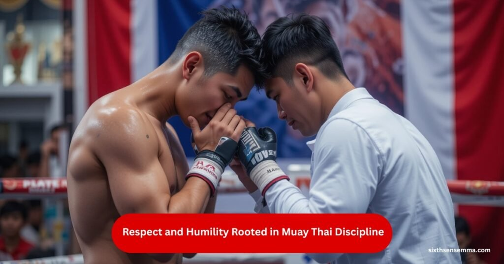

Why Muay Thai Training Is More Than Just a Workout
Muay Thai training is not just another workout trend. It’s a disciplined lifestyle that carves the body, challenges the mind, and strengthens emotional endurance. Unlike regular fitness routines that focus only on external changes, this ancient combat art dives deep into your core, reshaping how you move, think, and react under pressure. Every strike, every clinch, and every breath taken during the session pushes your limits while grounding your spirit. This training doesn’t just test stamina it demands presence, focus, and inner control.
Whether you’re striking pads in a structured gym environment, following drills at home, or learning through formal Muay Thai training sessions, the impact goes far beyond physical strength. It cultivates a mental discipline that starts reflecting in everyday choices building confidence, reducing impulsive reactions, and encouraging resilience. Over time, it transforms more than muscles; it redefines mindset, making each practitioner sharper, calmer, and more centered in their daily life.
Why sixth sense mma is the Right Place to Grow Through Muay Thai
At sixth sense mma, Muay Thai is more than a workout, it’s a personal journey. Our space brings together people who want to grow stronger, both mentally and physically, in an environment that challenges you while keeping you grounded. Whether you’re just starting or building on years of experience, you’ll find focused coaching, a strong sense of community, and a rhythm that pushes you to improve every day. It’s a place where discipline becomes habit and progress feels personal.
READ MORE: Muay Thai vs Kickboxing for Self-Defense, What Works Better
Muay Thai Builds Mental Resilience
Muay Thai training not only transforms the body but also forges a disciplined and focused mind. As practitioners endure physically demanding drills, their mental thresholds expand, enabling them to stay composed in discomfort and think clearly under stress. Whether you’re pushing through fatigue or responding to fast paced combinations, each session sharpens your mental resilience and ability to stay fully present.
- Muay Thai Builds Mental Resilience: As you push through rounds of intense drills, your ability to stay composed in discomfort steadily grows. It’s not just about survival in the ring; it’s about building the mental armor to face everyday stress with clarity and confidence.
- Mental Commitment Through Mitt Work: Focus mitt drills are more than just physical strikes—they demand instant recognition of cues and complete mental presence. A single lapse in focus can disrupt the flow, forcing your brain to adapt quickly and think ahead with purpose.
Emotional Balance Through Training
Emotional benefits of Muay Thai training go far beyond the visible sweat and effort. Each session becomes a space where your mind disconnects from daily chaos and enters a state of structured intensity. Whether you’re perfecting a striking combination or flowing through footwork drills, your mental energy is redirected toward precision and presence. This consistent focus helps dissolve stress and enhances your ability to emotionally reset after every session.
- Triggers natural endorphin release, which lifts the mood and creates a sense of emotional lightness, reducing the frequency of unexplained irritability or mood swings.
- The repetitive nature of technical drills works like moving meditation, gradually decluttering mental noise and fostering a more centered state of mind.
- Numerous female practitioners have reported stronger emotional self regulation, crediting the art for helping them manage anxiety, frustration, and emotional overwhelm more effectively.
- Training environments offer non verbal emotional outlets, especially through bag work, which allows the release of pent up tension in a constructive and empowering way.
- The habit of showing up, even on mentally off days, builds emotional discipline and reinforces a deeper connection between the body and emotional resilience.
Discipline and Laser Sharp Focus
True Muay Thai training is built on a foundation of focus, accountability, and routine. It’s not just about physical readiness; it’s about showing up even when you’re mentally drained, sticking to structure, and committing to constant refinement.
With every session, you sharpen not only your technique but also your ability to concentrate with precision. These qualities eventually spill over into your personal and professional life, shaping a more organized and mentally alert version of you.
READ MORE: Protect Yourself Better with Muay Thai Gear
Transferable Discipline Beyond the Gym
Self control required in Muay Thai seeps into your daily routine leading to better sleep cycles, more intentional eating habits, and a decline in unproductive distractions. It teaches your mind to respect structure in every part of life.
- Sharper Decision Making via Reflex Conditioning: Reaction based training such as defensive counters or timing drills trains the brain to assess situations in split seconds. This improves your ability to make quick, calculated decisions in both training and real life pressure scenarios.
- Cognitive Control from Repetition: The repetition of complex combinations creates neural conditioning, allowing you to stay locked in on goals and filter out external noise. This kind of focused repetition gradually enhances long term cognitive discipline.
- Precision Thinking Under Pressure: Intense training environments simulate chaotic scenarios where you must maintain clarity under fatigue. This teaches your mind to filter urgency from panic, boosting confidence and control in high stakes moments.
Strong Sense of Community
In Muay Thai training, the gym atmosphere is more than just a place to work out it’s a supportive network where individuals push each other toward growth. From early morning agility drills to late night sparring sessions, every member plays a role in motivating and uplifting others. This shared journey creates a sense of belonging that fosters dedication and long-term commitment beyond physical fitness.
- Mutual Encouragement During Fight Camps: During intense fight camp periods, teammates provide constant motivation and moral support. This collective encouragement helps fighters push past their limits and maintain focus during grueling schedules.
- Shared Training Routines Enhance Consistency: When training schedules and goals are aligned among gym members, it becomes easier to maintain discipline. The shared experience builds a rhythm that encourages everyone to stay on track and progress together.
- Inclusive Environment for All Levels: Muay Thai gyms embrace diversity in participants, welcoming everyone from children learning basics to women honing self defense skills and professional fighters preparing for competition. This inclusivity builds a balanced community where all can thrive.

Respect and Humility Rooted in Muay Thai Discipline
Muay Thai instruction is based on traditional Thai requirements and is deeply grounded in humility and respect. Practitioners bow to their trainers, partners, and the training area, which helps cultivate a humble attitude and appreciation for the art’s heritage. Techniques are executed with controlled precision, highlighting the importance of responsibility and care during practice.
- Embracing Failure for Growth: Many training sessions are solo, pushing practitioners to confront their mistakes directly. This helps build resilience, humility, and an open mindset toward continual improvement.
READ MORE: Why Brazilian Jiu Jitsu Classes Are Essential for Self-Defense and Fitness
Setting Goals & Personal Development through Muay Thai
Muay Thai training offers a clear path to personal growth by setting achievable, well defined goals—whether it’s mastering a powerful roundhouse kick or enhancing overall flexibility. Each skill you acquire and every challenging round you complete strengthens your self confidence, encouraging you to push boundaries beyond the gym. These consistent small victories build a resilient mindset, making you realize your capacity to overcome challenges in all areas of life.
- Continuous Progress with Every Session: Each training class motivates you to improve by focusing on specific techniques and physical conditioning, fostering a steady path of self improvement.
- Building Trust in Your Abilities: Mastering complex moves and combinations gradually increases self trust, as you gain confidence in your growing skills and physical prowess.
- Enhancing Consistency for Long Term Success: Regular practice cultivates discipline and persistence, essential for maintaining steady progress and achieving lasting development both physically and mentally.
Structured Outlet for Managing Daily Stress
Muay Thai offers a powerful and healthy channel to manage and release everyday stress instead of letting it build up inside, leaving you mentally refreshed. Additionally, developing self defense skills boosts your sense of security, empowering you with confidence both physically and emotionally.
How Muay Thai Helps Relieve Stress
- Transforming Aggression into Movement
Muay Thai techniques teach you to channel intense emotions like frustration and anger into focused strikes and fluid motions, providing a constructive outlet. - Mental Clarity through Physical Exhaustion
The rigorous strength and endurance training involved helps clear mental clutter, allowing you to return to daily life with a calm and focused mindset. - Increased Confidence from Self Defense
Learning effective self defense builds a strong sense of personal safety, reducing anxiety and enhancing overall emotional stability.
Enhanced Body Awareness and Coordination
Muay Thai training sharpens your body awareness, helping you recognize subtle movements, reaction speed, and overall stability. This heightened sense of control significantly lowers the risk of injuries by promoting better balance and posture during dynamic actions like strikes and combinations.
The coordination skills developed extend beyond the ring, improving performance in everyday activities such as running and yoga, creating a more agile and resilient body.
Positive Lifestyle Changes Through Muay Thai Training
Committing to Muay Thai transforms your entire lifestyle. Practitioners often notice improved sleep quality, as physical exhaustion promotes deeper rest. Nutritional habits shift toward cleaner eating, with a focus on fueling the body for optimal performance and recovery. Many fighters adopt structured diets and incorporate active recovery practices, which enhance both physical health and mental clarity.
Lifestyle Benefits from Muay Thai Commitment
- Increased Preference for Clean Eating
Training motivates you to reduce processed foods, choosing nutrient rich meals that support energy and muscle repair. - Consistent and Restorative Sleep Patterns
Regular physical exertion helps regulate sleep cycles, leading to more restorative rest and improved recovery. - Decreased Dependence on Harmful Substances
Many athletes naturally cut back on alcohol and stimulants, favoring a cleaner, more balanced approach to health and wellness.
How Muay Thai Enhances Present Moment Awareness
- Eliminates Distractions During Training
Active rounds require total immersion, leaving no space for wandering thoughts or external interruptions. - Cultivates Calm and Clear Decision Making
The pressure of fast paced drills strengthens your ability to think clearly and respond thoughtfully in tense situations. - Improves Focus Beyond the Gym
The mental discipline gained through training sharpens your concentration in daily tasks and responsibilities.
Growth Through Self Discovery
Muay Thai training is a profound journey of self awareness, where you learn to understand your emotions, reactions, and physical abilities deeply. This process isn’t about perfection but about unlocking your true potential and evolving into a stronger, more resilient person.
Why Choose sixth sense mma for Your Muay Thai Journey
Choosing where to train makes all the difference, and at sixth sense mma, the focus is always on helping you grow through real, structured Muay Thai. We don’t believe in one-size-fits-all sessions, our coaches take the time to understand your goals, push you at the right pace, and guide you with purpose. The atmosphere here is disciplined yet welcoming, making it easier to stay consistent and enjoy the process.
What You’ll Experience at sixth sense mma:
- Personal attention from experienced Muay Thai coaches
- A supportive gym culture that keeps you motivated
- Programs for all levels from beginners to advanced fighters
- Real focus on discipline, confidence, and mental sharpness
- Clean, well-equipped training space in a high-energy environment
Want to Talk or Visit?
If you’re thinking about starting or switching up your training, we’re here to help. You can call or message us directly, whatever’s easiest for you. contact
Conclusion
Muay Thai training offers much more than just physical improvement; it deeply enhances mental toughness, discipline, and emotional stability. This practice develops a focused mindset and encourages positive lifestyle changes through consistent routines and nutrition. Whether you train at home or in a gym, every session contributes to your overall growth. The values and skills achieved go well beyond the actual sport. Ultimately, Muay Thai transforms both your body and mind into stronger, more resilient versions of yourself.
FAQ’s
Muay Thai goes beyond physical fitness by incorporating mental discipline, emotional control, and spiritual grounding. Unlike typical gym routines, it challenges both your body and mind, enhancing your resilience, focus, and self-awareness.
The demanding nature of Muay Thai drills forces you to stay composed under pressure. Regular exposure to physical intensity develops mental toughness, improving your ability to think clearly and stay present even during stress.
Yes. The routines and techniques in Muay Thai require sharp concentration and consistency. Over time, this mental discipline carries over into daily life, improving productivity, decision-making, and time management.
Sixth Sense MMA offers a supportive, disciplined environment that fosters personal growth. Whether you’re a beginner or a seasoned athlete, the coaches provide individualized attention in a clean, welcoming, and high-energy space.
Regular training encourages healthier habits, including better sleep, improved diet, reduced reliance on harmful substances, and more structured daily routines. It supports a holistic transformation, not just physical conditioning.
Absolutely. Sixth Sense MMA offers programs for all skill levels. Beginners are guided through fundamentals with patient coaching, while advanced students receive technical refinement and strategic conditioning.
You’ll gain confidence, emotional strength, and self-trust by setting and achieving tangible goals—like mastering a new kick or maintaining consistency. These achievements build a strong foundation for growth in all life areas.
Train with us in Coppell
The first class is free. Shorts, a t-shirt and a water bottle. We lend the rest.
Book a free class